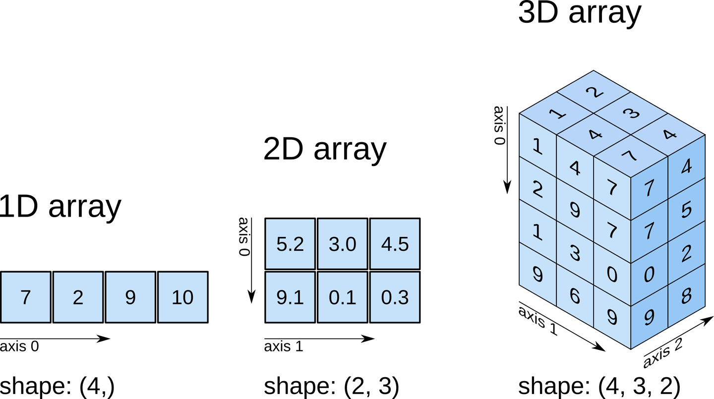
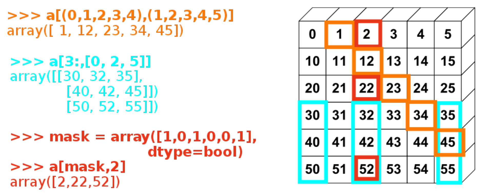
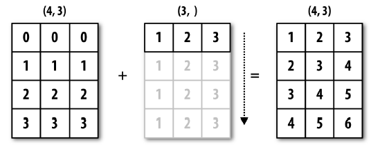
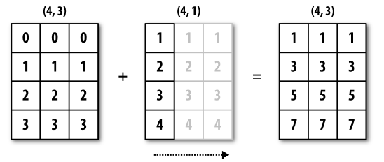

Matrix operations with Numpy#
Numpy is a fundamental Python library that implements operations with n-dimensional arrays. It has basic tools for linear algebra, statistics, random number generation, etc. and is also the basis for other machine learning libraries such as scikit-learn or pytorch.
Reference: https://docs.scipy.org/doc/numpy-1.9.1/index.html
n-dimensional array objects#
# We import the library (only at the beginning of the program)
import numpy as np
# Let's create a 1D array
array_1d = np.array([7,2,9,10])
array_1d
array([ 7, 2, 9, 10])
array_1d.shape
(4,)
# now a matrix (2D array)
array_2d = np.array([[5.2, 3.0, 4.5],
[9.1, 0.1, 0.3]])
array_2d
array([[5.2, 3. , 4.5],
[9.1, 0.1, 0.3]])
array_2d.shape
(2, 3)
array_3d = np.array([[[1, 4, 7],
[2, 9, 7],
[1, 3, 0],
[9, 6, 9]],
[[2, 3, 4],
[0, 0, 5],
[0, 0, 2],
[0, 0, 8]]
])
array_3d
array([[[1, 4, 7],
[2, 9, 7],
[1, 3, 0],
[9, 6, 9]],
[[2, 3, 4],
[0, 0, 5],
[0, 0, 2],
[0, 0, 8]]])
array_3d.shape
(2, 4, 3)
Arrays also have a type, which is usually inferred from the data. Each component of the array must be of the same type. The most common types are: int, float, bool, str, object.
array_3d.dtype
dtype('int64')
array_2d.dtype
dtype('float64')
Array creation#
The main function is np.array(), which creates arrays from sequences (lists, tuples, etc.). There are also functions to create special arrays such as empty arrays, arrays of 0s and arrays of 1s.
References:
https://docs.scipy.org/doc/numpy-1.9.1/reference/generated/numpy.array.html#numpy.array
https://docs.scipy.org/doc/numpy-1.9.1/reference/routines.array-creation.html#routines-array-creation
np.array([1, 2, 3])
array([1, 2, 3])
# What is the type of this array?
np.array([1, 2, 3.0]).dtype
dtype('float64')
np.zeros(5)
array([0., 0., 0., 0., 0.])
np.ones((3, 4))
array([[1., 1., 1., 1.],
[1., 1., 1., 1.],
[1., 1., 1., 1.]])
np.arange(0,10)
array([0, 1, 2, 3, 4, 5, 6, 7, 8, 9])
Operations with arrays#
All basic arithmetic operations (+, -, /, *) are implemented for numpy arrays. They are applied element by element. Therefore, arrays have to have the same size (with some exceptions, we will see later)
a = np.array([1, 2, 3, 4])
a + 1
array([2, 3, 4, 5])
2 ** a
array([ 2, 4, 8, 16])
b = np.ones(4) + 1
b
array([2., 2., 2., 2.])
a + b
array([3., 4., 5., 6.])
a / b
array([0.5, 1. , 1.5, 2. ])
# This is not matrix multiplication!
c = np.ones((3, 3))
c * c
array([[1., 1., 1.],
[1., 1., 1.],
[1., 1., 1.]])
Logical and Comparison operations#
The comparison operators are also applied on an element-by-element basis.
a = np.array([5, 7, 3, 4])
b = np.array([5, 2, 6, 9])
a > b
array([False, True, False, False])
a == b
array([ True, False, False, False])
And also the logical operators, but not with the usual Python syntax
c = a > b
d = a == b
c, d
(array([False, True, False, False]), array([ True, False, False, False]))
np.logical_and(c, d)
array([False, False, False, False])
np.logical_or(c, d)
array([ True, True, False, False])
Numpy also implements many mathematical functions:
https://docs.scipy.org/doc/numpy/reference/routines.math.html
# Sine function
np.sin(a)
array([-0.95892427, 0.6569866 , 0.14112001, -0.7568025 ])
Why use numpy arrays instead of lists?#
Performance: Numpy arrays are much faster than lists, especially for large arrays and operations that involve many elements. This is because numpy arrays are stored in a contiguous block of memory, while lists are stored in a fragmented way. This makes it easier to access the elements of an array and to perform operations on them.
num_samples = 10000000
my_arr = np.arange(num_samples)
my_list = list(range(num_samples))
Let’s try to multiply by two the previous list (python) and the previous array (numpy), and see how long it takes:
Let’s do each 10 times to get a more accurate measurement
%%time
for _ in range(10):
my_list2 = [x * 2 for x in my_list] # using vanilla Python
CPU times: user 2.54 s, sys: 660 ms, total: 3.2 s
Wall time: 3.24 s
%%time
for _ in range(10):
my_arr2 = my_arr * 2 # through numpy
CPU times: user 50.2 ms, sys: 59.4 ms, total: 110 ms
Wall time: 113 ms
Depending on the computer, numpy can be between 10x and 100x faster than lists 🔥
Reshaping arrays#
We can alter the arrangement of the elements in an array with the reshape() method. The only condition is that the number of elements is the same before and after the transformation.
row = np.arange(0,9)
row
array([0, 1, 2, 3, 4, 5, 6, 7, 8])
row.shape
(9,)
column = row.reshape(9,1)
column
array([[0],
[1],
[2],
[3],
[4],
[5],
[6],
[7],
[8]])
column.shape
(9, 1)
matrix = row.reshape(3,3)
matrix
array([[0, 1, 2],
[3, 4, 5],
[6, 7, 8]])
Indexing#
Much like Python sequences, arrays can be indexed with square brackets [] and the : operator.
If the array has multiple dimensions, we need an index for each of them, separated by commas.
Reference: https://docs.scipy.org/doc/numpy/user/basics.indexing.html
x = np.arange(10)
x
array([0, 1, 2, 3, 4, 5, 6, 7, 8, 9])
x[8]
8
x[2:6]
array([2, 3, 4, 5])
x[-3:]
array([7, 8, 9])
x[:-1]
array([0, 1, 2, 3, 4, 5, 6, 7, 8])
x[0:8:2]
array([0, 2, 4, 6])
arr = np.arange(0,9).reshape(3,3)
arr
array([[0, 1, 2],
[3, 4, 5],
[6, 7, 8]])
arr[1,1]
4
arr[0:2, 0:2]
array([[0, 1],
[3, 4]])
They can also be indexed using boolean values, where only those that are True are selected.
Boolean arrays of indexes must have the same size as what we are indexing.
np.random.seed(0) # this sets the random seed so we all get the same random numbers
data = np.random.randn(10, 3)
data
array([[ 1.76405235, 0.40015721, 0.97873798],
[ 2.2408932 , 1.86755799, -0.97727788],
[ 0.95008842, -0.15135721, -0.10321885],
[ 0.4105985 , 0.14404357, 1.45427351],
[ 0.76103773, 0.12167502, 0.44386323],
[ 0.33367433, 1.49407907, -0.20515826],
[ 0.3130677 , -0.85409574, -2.55298982],
[ 0.6536186 , 0.8644362 , -0.74216502],
[ 2.26975462, -1.45436567, 0.04575852],
[-0.18718385, 1.53277921, 1.46935877]])
data > 0
array([[ True, True, True],
[ True, True, False],
[ True, False, False],
[ True, True, True],
[ True, True, True],
[ True, True, False],
[ True, False, False],
[ True, True, False],
[ True, False, True],
[False, True, True]])
data[ data > 0 ]
array([1.76405235, 0.40015721, 0.97873798, 2.2408932 , 1.86755799,
0.95008842, 0.4105985 , 0.14404357, 1.45427351, 0.76103773,
0.12167502, 0.44386323, 0.33367433, 1.49407907, 0.3130677 ,
0.6536186 , 0.8644362 , 2.26975462, 0.04575852, 1.53277921,
1.46935877])
More examples:
There are also some functions that access certain parts of a matrix, for example the diagonal:
np.diag(data)
array([ 1.76405235, 1.86755799, -0.10321885])
Reductions#
Perform an operation on the array members, typically returning a single value or a smaller array.
Ref: http://www.scipy-lectures.org/intro/numpy/operations.html
a = np.arange(10)
a
array([0, 1, 2, 3, 4, 5, 6, 7, 8, 9])
a.sum()
45
x = np.array([[1, 1, 1], [2, 3, 6]])
x
array([[1, 1, 1],
[2, 3, 6]])
x.sum()
14
We can also reduce through particular axes of the array:
x.sum(axis=0)
array([3, 4, 7])
x.sum(axis=1)
array([ 3, 11])
# The mean is also a reduction operation:
x.mean(axis=1)
array([1. , 3.66666667])
x.max()
6
x.max(axis=0)
array([2, 3, 6])
c = np.array([1, 0, 0, 0], dtype=bool)
c
array([ True, False, False, False])
c.any()
True
c.all()
False
Most of these functions are implemented as methods (of the array) and as functions, for example:
# computes the standard deviation
np.std(x)
1.7950549357115013
x.std()
1.7950549357115013
Linear Algebra#
Numpy has the basic routines for calculating linear algebra operations. These routines are very efficient, since they are implemented in C (as is the whole library).
Reference: http://docs.scipy.org/doc/numpy-1.15.0/reference/routines.linalg.html
from numpy.linalg import inv
c = np.ones((3, 3))
# element-wise multiplication
c * c
array([[1., 1., 1.],
[1., 1., 1.],
[1., 1., 1.]])
# matrix multiplication
c.dot(c)
array([[3., 3., 3.],
[3., 3., 3.],
[3., 3., 3.]])
# also written as:
c @ c
array([[3., 3., 3.],
[3., 3., 3.],
[3., 3., 3.]])
# the number of columns of the first matrix has to match the number of rows of the second matrix
a = np.ones((5, 2))
b = np.ones((2, 3))
a.dot(b).shape
(5, 3)
a = np.random.randn(3, 3)
a
array([[ 0.15494743, 0.37816252, -0.88778575],
[-1.98079647, -0.34791215, 0.15634897],
[ 1.23029068, 1.20237985, -0.38732682]])
# inverse of a matrix
inv(a)
array([[-0.03528377, -0.61041936, -0.16552948],
[-0.38101262, 0.68414559, 1.1494764 ],
[-1.29485276, 0.18488167, 0.46074239]])
a @ inv(a)
array([[ 1.00000000e+00, -4.83318634e-17, -1.82357661e-17],
[ 5.20565222e-18, 1.00000000e+00, 5.97982466e-17],
[-1.21420781e-16, -9.43426088e-19, 1.00000000e+00]])
Broadcasting#
Array operations are generally performed element by element.
Therefore, the arrays must have the same dimensions.
This rule is sometimes relaxed, allowing to operate with two arrays of different sizes:
Reference: https://docs.scipy.org/doc/numpy/user/basics.broadcasting.html
a = np.array([[ 0.0, 0.0, 0.0], [1,1,1], [2,2,2], [3,3,3]])
b = np.array(([1, 2, 3]))
a.shape
(4, 3)
b.shape
(3,)
a+b
array([[1., 2., 3.],
[2., 3., 4.],
[3., 4., 5.],
[4., 5., 6.]])
The previous was an example of broadcasting through dimension 0: 
c = np.array([4, 5, 6, 7])
a.shape
(4, 3)
c.shape
(4,)
a + c
---------------------------------------------------------------------------
ValueError Traceback (most recent call last)
/var/folders/l_/k13w4mhd5hv4bddxwqz8qdfw0000gn/T/ipykernel_8477/2107169428.py in <module>
----> 1 a + c
ValueError: operands could not be broadcast together with shapes (4,3) (4,)
The broadcasting rule fails because the last dimensions do not match. However, we can add a new dimension to the array of size 1, and then the rule is met:
c = c.reshape(4,1)
c.shape
(4, 1)
a + c
array([[ 4., 4., 4.],
[ 6., 6., 6.],
[ 8., 8., 8.],
[10., 10., 10.]])
The previous was an example of broadcasting through dimension 1: 